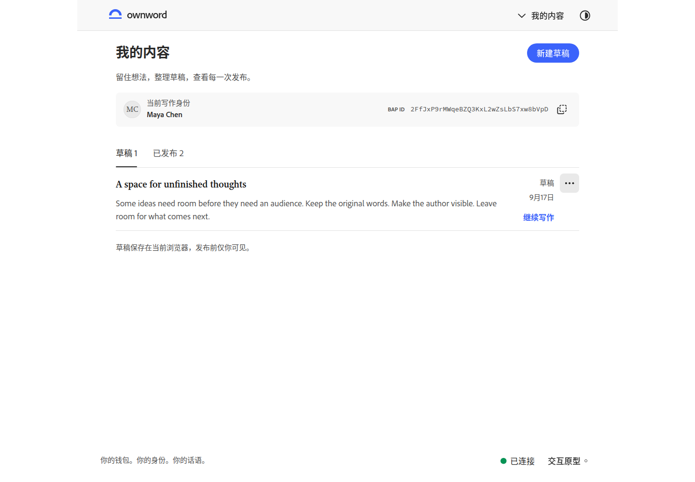
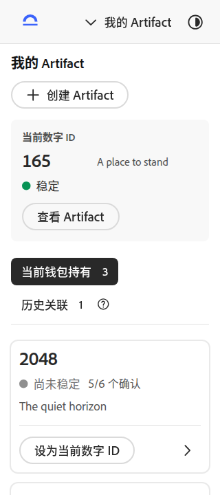
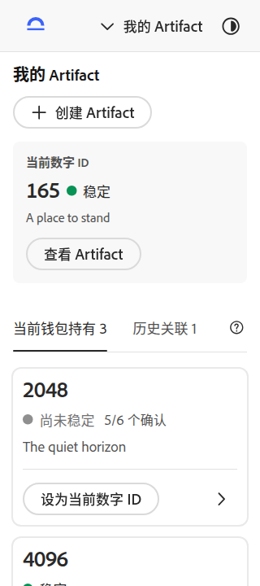
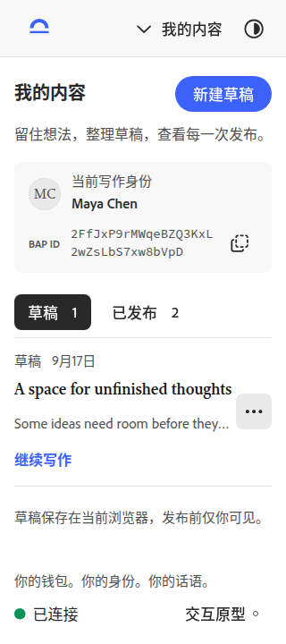
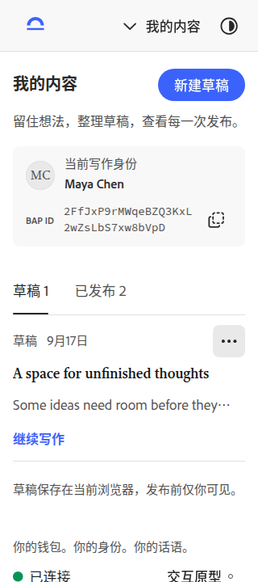
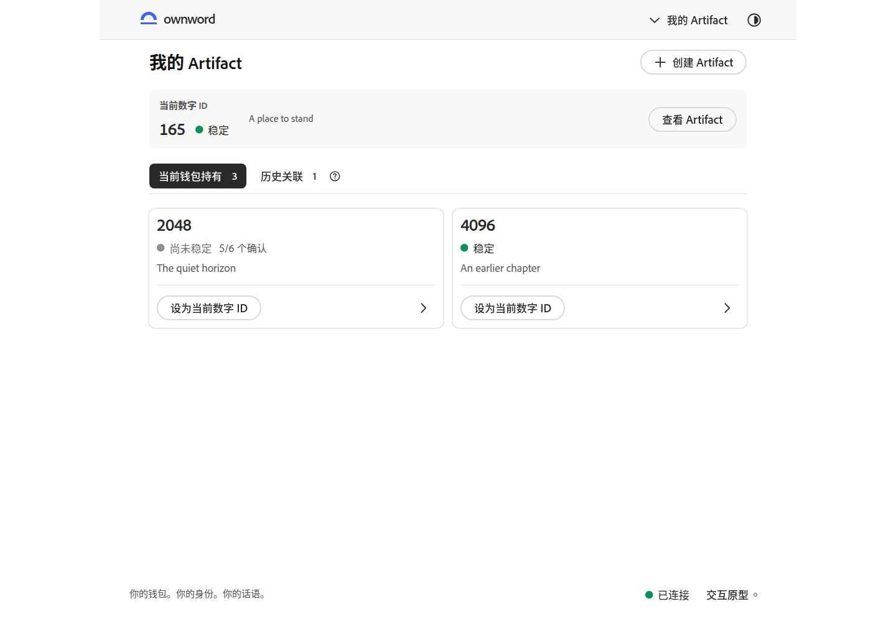
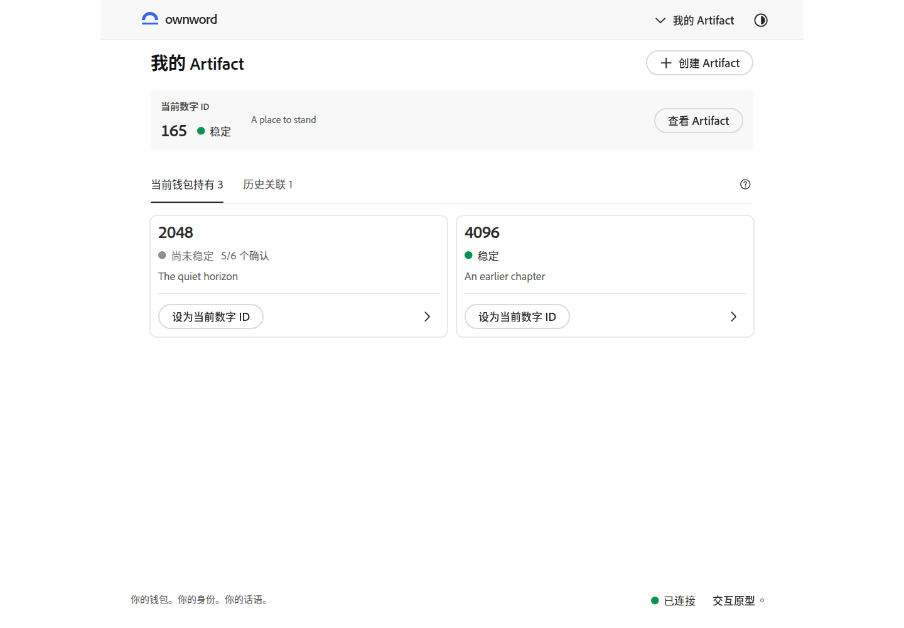

桌面 · 我的内容
筛选、分隔线与列表形成连续的阅读顺序；保留作者上下文、草稿状态和继续写作入口。


本轮收紧「我的内容」与「我的 Artifact」的信息层级。下方使用相同数据、状态、语言和视口；点击图片可查看原尺寸。
打开交互原型 · 上一轮：身份与作品层级 · 待视觉复核
当前数字 ID 与状态同行，名称在其下方。筛选从两行收为一行，让持有列表更早出现。


草稿和已发布改用与主页一致的下划线 Tabs。草稿菜单对齐状态行，标题使用完整行宽，与菜单保持间距。


持有与历史使用同一组官方 Tabs；历史规则仍放在帮助中，当前数字 ID 与候选对象分层呈现。


筛选、分隔线与列表形成连续的阅读顺序；保留作者上下文、草稿状态和继续写作入口。
